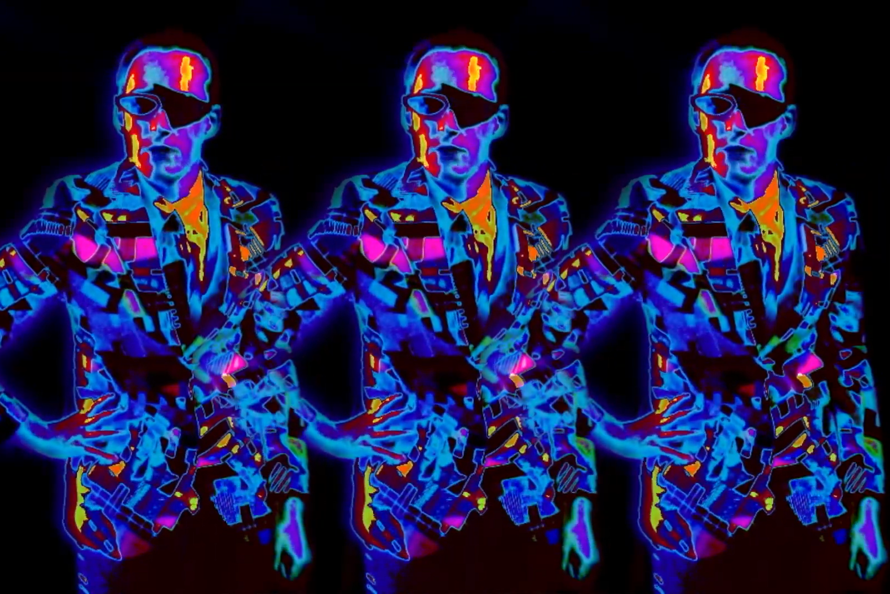

Video is one of my favorite mediums. I like editing and using the camera as an extension
of my eyes to create visual narratives.
I have experience in
Filming with multiple cameras on-site (handheld with static angles).
Using accessories such as gimbals, tripods and lighting
equipment.
Post-production: editing, splicing, color grading, workig with effects and
marrying audio to video.
Researching and using AI as well as third-party tools to realize ideas
and wishes.
Programming
Solving problems and finding ways to bring ideas to life through
code. I enjoy new challenges and learning new technologies.
I have experience in
Digitalization of forms through Amt24/OZG-Hub.
Creating 3D worlds with Unity 3D.
Generating digital art with Processing.js.
Customizing and personalizing websites.
Graphic Design
With an eye for detail and a feel for aesthetics, I enjoy tinkering
with the layout, text and color of a design to improve its visual appeal.
I have experience in
Working with designs for flyers, posters, CDs and
t-shirts.
Creating marketting content in different formats.
Working with AI tools to generate interesting and original work.
Digital Photography.
Music & Sound
Music is my passion. I compose and produce my own music in different styles.
I also enjoy working with sound and adding my own auditory work to the worlds
I create through the visual mediums.
I have experience in
Music composition in varying styles, but mostly rock/metal, electronic,
classical and ambient.
Audio Production: recording, editing and mixing.
My Projects
Bleak Sanctuary (2024)
Bleak Sanctuary is my music project and with it I am able use different
skills
and bring ideas to life whithin the realms of music, video, design and marketting. This is the
music video
of our debut single "Cold Winds."
Role: Composer, Musician and Video Maker
Amt24 (2023)
As an apprentice at msg, my first assigned project was Amt24,
where I learned how to digitize official forms for the Free State of Saxony. Technologies used:
Amt24, Groovy, Eclipse, Activiti BPMN (Business Process Model and Notation) and Git.
Role: Programmer and Developer
Mood of Living (2021)
My task at Mood of Living was to use the given material to create
video content for social media. I incorporated photos, music and text from each subject into
beautiful short videos.
With Barn Burner Music I was able to shoot and edit performance videos
for drummers. I worked with iPhone, GoPro and a DSLR camera. For the post-production I used Final Cut Pro.
Role: Cameraman and Video Editor
Human Era (2019)
"Human Era" is my Bachelor Thesis. Part research and part virtual
experience, it was
made with Unity 3D. Inspired by Nobert Wiener, The Anthropocene, George Orwell, The Matrix and
more...
The project guides the user and reader through a critique of modern times while contrasted
by the very medium that it is presented in. It was presented as a new media art installation
at Purchase College in New York.
Role: Game Designer, Sound Designer, Programmer and Developer

Toy Records (2018)
These are a few project examples from a digital media internship
focused on producing promotional video content for an independent label and event promoter.
Projects consisted of filming and editing footage of live music events as well as interviews
with artists
Abby Jasmine and Azia.